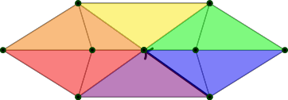
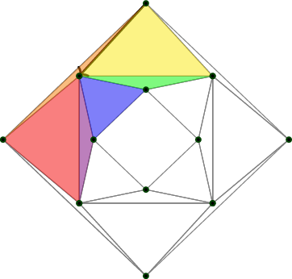
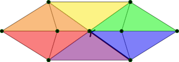
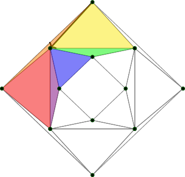
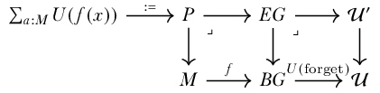
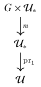
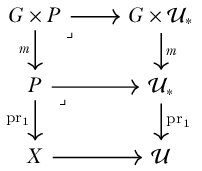
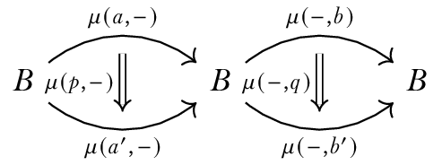
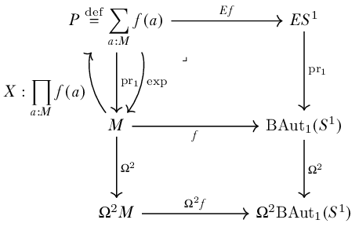

\(\newcommand{\textesh}{∫}\) \(\newcommand{\ensuremath}{}\)
Homotopy type theory captures all the major concepts of differential geometry including forms, connections, curvature, and gauge theory. We show this by focusing on combinatorial manifolds, which are discrete in the sense of real cohesion (Shulman, 2017), and drawing inspiration from the similarly young field of discrete differential geometry.
“It is always ourselves we work on, whether we realize it or not. There is no other work to be done in the world.” — Stephen Talbott, The Future Does Not Compute (Talbott, 1995)
The observation that sparks the following discussion is this: if we can manage to reformulate differential geometry in discrete terms (i.e. finite, without infinitesimals) then we may also be able to construct it synthetically in homotopy type theory. Furthermore, if we do capture geometry in HoTT then there’s a chance that it can become clearer and smaller. We would then have new tools, a new audience, and a new program to (re)explore geometry, gauge theory, low dimensional topology, and mathematical physics.
Applied mathematicians and computer scientists have been developing discrete differential geometry (DDG) for many years. The 2003 Ph.D. thesis of Anil Hirani (Hirani, 2003) (see also the multi-author follow-up (Desbrun et al., 2005)) defines finite versions of vector fields, differential forms, the wedge product, the Hodge star, and several differential operators (exterior derivative, div, grad, curl, Laplace-Beltrami, Lie derivative). Hirani and others cite Whitney’s 1957 book Geometric Integration Theory (Whitney, 1957) which develops a theory of cochains by integrating smooth forms over chains. In 2004 Melvil Leok, Jerrold Marsden, and Alan Weinstein (Leok et al., 2005) defined discrete connections on principal bundles. This is probably the work most spiritually similar to this paper. The motivation for the above constructions was applied mathematics: modeling the differential equations of mechanics and fluid mechanics with the so-called “finite element” methods. The theory has been adopted and extended by the computer graphics community as well (see Keenan Crane’s course notes (Crane et al., 2013) for a gentle survey).
The applied category theory community has begun to develop category theoretic foundations and software libraries to increase the reusability and compositionality of finite element methods in science and engineering problems. See for example recent work to bring discrete exterior calculus into the AlgebraicJulia library (Morris et al., 2024) (Patterson et al., 2022).
For these classically-minded applied mathematicians DDG is defined on combinatorial manifolds such as simplicial complexes, of any finite dimension. The 0-cells play the role of points, the 1-cells are path segments, and so on. They define \(n\)-forms as functions on the \(n\)-dimensional faces of the manifold into the real numbers, which is then extended by linearity to arbitrary \(n\)-chains. Exterior differentiation is defined by Stokes theorem (which is no longer a theorem in this setting), by which we mean the following.
Definition 1. (Exterior derivative in DDG.) Let \(\omega\) be an \(n-1\)-form on a combinatorial manifold \(M\), and let \(\Omega\) be an \(n\)-face of \(M\). Let \(\partial\) be the boundary operator on faces. The exterior derivative \(d\) is defined by \[d\omega(\Omega) = \omega(\partial\Omega).\]
We will take the following path. We will use DDG as a stepping stone between smooth geometry and HoTT. We will learn how to see the finite analogues of infinitesimal constructions, and then use the syntax of type theory to re-present them. It won’t always be a two-step process! Sometimes even the smooth arguments are made with finite combinatorial methods, and then a limit is taken. This is especially true where the Gauss-Bonnet and Poincaré-Hopf theorems are concerned. \[\mathrm{Differential\ geometry}\longrightarrow\mathrm{Discrete\ differential\ geometry}\longrightarrow \mathrm{Homotopy\ type\ theory}\]
TODO:
Color-code each continuous cycle on the flat torus and the 3d torus, and use that to demonstrate how the curvature acts (begun).
Motivate the refinement by showing a many-triangled neighborhood being tranpsorted around a small triangle.
We will define some higher inductive types to serve as domain and codomain of these motivating examples.
First we need a square, which will be a stand-in for a circle that can support a notion of a quarter-rotation.
Definition 2. The higher inductive type \(C_4\) (where C stands for “circle”). \[\begin{aligned} C_4 &: \mathsf{Type}\\ c_1, c_2, c_3, c_4 &: C_4 \\ c_1c_2 &: c_1 = c_2 \\ c_2c_3 &: c_2 = c_3 \\ c_3c_4 &: c_3 = c_4 \\ c_4c_1 &: c_4 = c_1 \\ \end{aligned}\]
We may also think of \(C_4\) as the join of the two-element sets \(\{c_1, c_3\}* \{c_2, c_4\}\).
Definition 3. The HIT \(\ensuremath{\mathbb{O}}_0\) is just 6 points, intended as the 0-skeleton of an octahedron, with vertices named after the colors on the faces of a Rubik’s Cube. \[w, y, b, r, g, o : \ensuremath{\mathbb{O}}_0\]
Definition 4. The HIT \(\ensuremath{\mathbb{O}}_1\) is the 1-skeleton of an octahedron. \[\begin{aligned} w, y, b, r, g, o &: \ensuremath{\mathbb{O}}_1 \\ wb &: w=b \\ wr &: w=r \\ wg &: w=g \\ wo &: w=o \\ yb &: y=b \\ yr &: y=r \\ yg &: y=g \\ yo &: y=o \\ br &: b=r \\ rg &: r=g \\ go &: g=o \\ ob &: o=b \end{aligned}\]
Definition 5. The HIT \(\ensuremath{\mathbb{O}}\) is an octahedron: \[\begin{aligned} w, y, b, r, g, o &: \ensuremath{\mathbb{O}}\\ wb &: w=b \\ wr &: w=r \\ wg &: w=g \\ wo &: w=o \\ yb &: y=b \\ yr &: y=r \\ yg &: y=g \\ yo &: y=o \\ br &: b=r \\ rg &: r=g \\ go &: g=o \\ ob &: o=b \\ wbr &: wb\cdot br\cdot wr^{-1} = \ensuremath{\mathsf{refl}}_w \\ wrg &: wr\cdot rg\cdot wg^{-1} = \ensuremath{\mathsf{refl}}_w \\ wgo &: wg\cdot go\cdot wo^{-1} = \ensuremath{\mathsf{refl}}_w \\ wob &: wo\cdot ob\cdot wb^{-1} = \ensuremath{\mathsf{refl}}_w \\ yrb &: yr\cdot rb\cdot yb^{-1} = \ensuremath{\mathsf{refl}}_y \\ ygr &: yg\cdot gr\cdot yr^{-1} = \ensuremath{\mathsf{refl}}_y \\ yog &: yo\cdot og\cdot yg^{-1} = \ensuremath{\mathsf{refl}}_y \\ ybo &: yb\cdot bo\cdot yo^{-1} = \ensuremath{\mathsf{refl}}_y \end{aligned}\]
We have obvious maps \(\ensuremath{\mathbb{O}}_0\xrightarrow[]{i_0} \ensuremath{\mathbb{O}}_1\xrightarrow[]{i_1} \ensuremath{\mathbb{O}}\) that include each skeleton into the next-higher-dimensional skeleton.
Here we’ll define combinatorial versions of tangent spaces and tangent circles, in the special case where every vertex has four neighbors.
Combinatorial spaces have a concept called the link of a vertex, which will be the main tool by which we connect with manifold theory. The vertices in the link are the vertices that are one edge away from the given point (its immediate neighbors), and the edges in the link are the edges connecting the neighbors to each other. If the link of an \(n\)-dimensional combinatorial space is always a combinatorial \(n-1\)-sphere, then we say the space is a combinatorial triangulation. We will look only at HITs that have a link that is merely equivalent to \(C_4\). So first we need notation for a connected component of the universe:
Definition 6. If we have \(X:\mathsf{Type}\) then we define \(\mathrm{BAut}X\stackrel{\mathrm{def}}{=}\sum_{Y:\mathsf{Type}} ||X=Y||_{-1}\).
Denote by \(abcd:\mathrm{BAut}C_4\) the HIT with vertices \(a, b, c, d\) and edges \(ab, bc, cd, da\) which clearly has various isomorphisms with \(C_4\).
We can now define a map \(\mathsf{link}:\ensuremath{\mathbb{O}}_0\to\mathrm{BAut}C_4\). Extending this later on to the 1-skeleton and 2-skeleton will take us into differential geometry!
Definition 7. \(\mathsf{link}:\ensuremath{\mathbb{O}}_0\to\mathrm{BAut}C_4\) is given by induction: \[\begin{aligned} \mathsf{link}(w) &= brgo \\ \mathsf{link}(y) &= bogr \\ \mathsf{link}(b) &= woyr \\ \mathsf{link}(r) &= wbyg \\ \mathsf{link}(g) &= wryo \\ \mathsf{link}(o) &= wgyb \end{aligned}\] We chose these orderings for the vertices by standing at the given vertex and enumerating the link in clockwise order, starting from \(w\) if possible, else \(b\).
Besides the link we also want to consider the 5-pointed object that includes the vertex itself and the edges connecting it to the vertices in the link. We will call such a shape an xbox since it is a square with both diagonals. We will denote xboxes by extending the square notation with a fifth letter to indicate the center of the xbox. For example, we can define an xbox \(C_{4c}\) as follows:
Definition 8. The higher inductive type \(C_{4c}\) with center \(c\), also denoted \(c_1c_2c_3c_4c\). \[\begin{aligned} C_{4c} &: \mathsf{Type}\\ c_1, c_2, c_3, c_4, c &: C_{4c} \\ c_1c_2 &: c_1 = c_2 \\ c_2c_3 &: c_2 = c_3 \\ c_3c_4 &: c_3 = c_4 \\ c_4c_1 &: c_4 = c_1 \\ c_1c &: c_1 = c \\ c_2c &: c_2 = c \\ c_3c &: c_3 = c \\ c_4c &: c_4 = c \end{aligned}\]
And we get a map \(\mathsf{xbox}:\ensuremath{\mathbb{O}}_0\to\mathsf{Type}\) similarly to \(\mathsf{link}\).
Definition 9. \(\mathsf{xbox}:\ensuremath{\mathbb{O}}_0\to\mathrm{BAut}C_{4c}\) is given by induction: \[\begin{aligned} \mathsf{xbox}(w) &= brgow \\ \mathsf{xbox}(y) &= bogry \\ \mathsf{xbox}(b) &= woyrb \\ \mathsf{xbox}(r) &= wbygr \\ \mathsf{xbox}(g) &= wryog \\ \mathsf{xbox}(o) &= wgybo \end{aligned}\]
Finally we want to consider the 2-type that fills in the faces of the xbox. This is a contractible type we will call an xdisk.
Definition 10. The higher inductive type \(C_{4c\mathsf{xdisk}}\) with center \(c\), also denoted \(c_1c_2c_3c_4c_\mathsf{xdisk}\). \[\begin{aligned} C_{4c\mathsf{xdisk}} &: \mathsf{Type}\\ c_1, c_2, c_3, c_4, c &: C_{4c\mathsf{xdisk}} \\ c_1c_2 &: c_1 = c_2 \\ c_2c_3 &: c_2 = c_3 \\ c_3c_4 &: c_3 = c_4 \\ c_4c_1 &: c_4 = c_1 \\ c_1c &: c_1 = c \\ c_2c &: c_2 = c \\ c_3c &: c_3 = c \\ c_4c &: c_4 = c \\ c_1c_2c &: c_1c_2\cdot c_2c\cdot c_1c^{-1} = \ensuremath{\mathsf{refl}}\\ c_2c_3c &: c_2c_2\cdot c_3c\cdot c_2c^{-1} = \ensuremath{\mathsf{refl}}\\ c_3c_4c &: c_3c_2\cdot c_4c\cdot c_3c^{-1} = \ensuremath{\mathsf{refl}}\\ c_4c_1c &: c_4c_2\cdot c_1c\cdot c_4c^{-1} = \ensuremath{\mathsf{refl}} \end{aligned}\]
We can define \(\mathsf{xdisk}:\ensuremath{\mathbb{O}}_0\to\mathrm{BAut}C_{4c\mathsf{xdisk}}\) by filling in the triangles in \(\mathsf{xbox}\).
Definition 11. \(\mathsf{xdisk}:\ensuremath{\mathbb{O}}_0\to\mathrm{BAut}C_{4c\mathsf{xdisk}}\) is given by induction: \[\begin{aligned} \mathsf{xbox}(w) &= brgow_\mathsf{xdisk}\\ \mathsf{xbox}(y) &= bogry_\mathsf{xdisk}\\ \mathsf{xbox}(b) &= woyrb_\mathsf{xdisk}\\ \mathsf{xbox}(r) &= wbygr_\mathsf{xdisk}\\ \mathsf{xbox}(g) &= wryog_\mathsf{xdisk}\\ \mathsf{xbox}(o) &= wgybo_\mathsf{xdisk} \end{aligned}\]
Note that \(\mathrm{BAut}C_4\) is of homotopy dimension at least 2, just as \(\ensuremath{\mathbb{O}}\) is. The paths are isomorphisms between types that are merely equivalent to squares, and the 2-paths are homotopies between these. We can make further use of Figure 1 by imagining how \(\mathsf{link}\) changes as we slide from point to point. Sliding from \(w\) to \(b\) and tipping the link as we go, we see \(r\mapsto r\) and \(o\mapsto o\) because those lie on the axis of rotation. Then \(g\mapsto w\) and \(b\mapsto y\).
The full map on the 1-skeleton is:
Definition 12. Define \(T_1:\ensuremath{\mathbb{O}}\to\mathrm{BAut}C_4\) on just the 1-skeleton by extending \(\mathsf{link}\) as follows: Transport away from \(w\):
\(T_1(wb):[b, r, g, o]\mapsto [y, r, w, o]\) (\(r, o\) fixed)
\(T_1(wr):[b, r, g, o]\mapsto [b, y, g, w]\) (\(b, g\) fixed)
\(T_1(wg):[b, r, g, o]\mapsto [w, r, y, o]\)
\(T_1(wo):[b, r, g, o]\mapsto [b, w, g, y]\)
Transport away from \(y\):
\(T_1(yb):[b, o, g, r]\mapsto [w, o, y, r]\)
\(T_1(yr):[b, o, g, r]\mapsto [b, y, g, w]\)
\(T_1(yg):[b, o, g, r]\mapsto [y, o, w, r]\)
\(T_1(yo):[b, o, g, r]\mapsto [b, w, g, y]\)
Transport along the equator:
\(T_1(br):[w, o, y, r]\mapsto [w, b, y, g]\)
\(T_1(rg):[w, b, y, g]\mapsto [w, r, y, o]\)
\(T_1(go):[w, r, y, o]\mapsto [w, g, y, b]\)
\(T_1(ob):[w, g, y, b]\mapsto [w, o, y, r]\)
It’s very important to be able to visualize what \(T_1\) does to triangular paths such as \(wb\cdot br\cdot rw\) (which circulates around the boundary of face \(wbr\)). You can see it if you imagine Figure 1 as the frames of a short movie. Or you can place your palm over the top of a cube and note where your fingers are pointing, then slide your hand to an equatorial face, then along the equator, then back to the top. The answer is: you come back rotated clockwise by a quarter-turn.
Definition 13. The map \(R:C_4\to C_4\) rotates by one quarter turn, one “click":
\(R(c_1) = c_2\)
\(R(c_2) = c_3\)
\(R(c_3) = c_4\)
\(R(c_4) = c_1\)
\(R(c_1c_2) = c_2c_3\)
\(R(c_2c_3) = c_3c_4\)
\(R(c_3c_4) = c_4c_1\)
\(R(c_4c_1) = c_1c_2\)
Now let’s extend \(T_1\) to all of \(\ensuremath{\mathbb{O}}\) by providing values for the eight faces. The face \(wbr\) is a path from \(\ensuremath{\mathsf{refl}}_w\) to the concatenation \(wb\cdot br\cdot rw\), and so the image of \(wbr\) under the extended version of \(T_1\) must be a homotopy from \(\ensuremath{\mathsf{refl}}_{T_1(w)}\) to \(T_1(wb\cdot br\cdot rw)\).
Definition 14. Define \(T_2:\ensuremath{\mathbb{O}}\to\mathrm{BAut}C_4\) by extending \(T_1\) to the faces as follows:
\(T_2(wbr)=H_R\)
\(T_2(wrg)=H_R\)
\(T_2(wgo)=H_R\)
\(T_2(ybo)=H_R\)
\(T_2(yrb)=H_R\)
\(T_2(ygr)=H_R\)
\(T_2(yog)=H_R\)
\(T_2(ybo)=H_R\)
where \(H_R:R=\ensuremath{\mathsf{refl}}\) is the obvious homotopy.
All the faces do the same thing: they map to a homotopy between the identity and clockwise rotation by a quarter turn. Concatenating the eight faces in the 2-groupoid \(\ensuremath{\mathbb{O}}\) would then map to a homotopy between the identity and two full rotations. This makes visible in HoTT the link between curvature and the euler characteristic (which is 2 for the octahedron).
We can define a combinatorial torus as a similar HIT. This time each vertex will have six neighbors. So all the links will be merely equal to \(C_6\) which is a hexagonal version of \(C_4\). See Figure 2.
To help parse this figure, imagine instead Figure 3. We take this simple alternating-triangle pattern, then glue the left and right edges, then bend into Figure 2. The fact that each column in Figure 3 has four dots corresponds to the torus in Figure 2 having a square in front, diamonds in the middle, and a square in back.
It’s a bit of a challenge to visualize how the connection should twist these “xhexes” as we move around. Part of the issue is that we have actually constrained ourselves quite a bit by requiring the tangent space to be the link of a point, which only has six points. We could be more precise about angles if the tangent spaces had many subdivisions of the circle. The way to achieve better approximations, which we will not pursue in this paper, is to refine a given triangulation, and then choose a contractible neighborhood for each point which is not the link but goes “farther out” and consists of many edges and encloses many triangles. We could then transport along a single edge, and map between two circles that each have many segments, approximating to arbitrary precision any real-world application. The theory and practice of refinements is extensive and includes computer graphics research.
But given an arbitrary edge on our impoverished 3d-embedded torus, how should we decide how to map the hexagons at the endpoints? The goal is of course to approximate the actual geometry of transport on a curved torus, so we should learn a little about that. Which is comforting – we’re trying to capture geometry, so it’s good that we need to use some!
Of all the edges on our shape, the ones that are not very similar to geodesics are the squares in front and back. The two diamonds clearly correspond to highly symmetric geodesics, and less clearly there are four other cycles that are close enough to geodesics that if we drew the edges curved, they’d be actual geodesics on the torus they were hugging (Figure 5).
 



Transport along geodesics is minimal in a technical sense, meaning the least twisty. If we use the flat torus diagram to help us, then we can identify the outer and inner diamond, which are three of the vertical black lines, as geodesics, as well as all of the diagonal lines, which are the ones in Figure 5. That leaves only the black vertical lines that go around the front and back squares. Those are not geodesics, and some twisting will take place there.
I am talking about twisting on individual edges, but that’s not a concept with standalone meaning since the hexagons are torsors. I’m impicitly using the flat torus to makes the hexagons all pointed, by pointing them at the top as they appear in Figure 3. But let’s not use that extra information, and instead let’s start talking about loops around faces.
(This section is not quite off the ground.)
The combinatorial structure we have in mind is a nerve of a good open cover. What do we know about which smooth manifolds have such covers? While we’re at it, let’s survey all the combinatorial-flavored spaces and survey what smooth manifolds are homotopy equivalent to which structures.
What topological manifolds are equivalent to a CW complex? The answer is the composition of a few results summarized by Allen Hatcher1 (citing (Kirby & Siebenmann, 1977) and (Freedman & Quinn, 1990)):
Every topological manifold has a handlebody structure except in dimension 4, where a 4-manifold has a handlebody structure if and only if it is smoothable. This is a theorem on page 136 of Freedman and Quinn’s book “Topology of 4-Manifolds”, with a reference given to the Kirby-Siebenmann book for the higher-dimensional case. It is then an elementary fact that an \(n\)-manifold with a handlebody structure is homotopy equivalent to a CW complex with one \(k\)-cell for each \(k\)-handle, so in particular there are no cells of dimension greater than \(n\). At least in the compact case a manifold with a handlebody structure is in fact homeomorphic to a CW complex with \(k\)-cells corresponding to \(k\)-handles; see page 107 of Kirby-Siebenmann. This probably holds in the noncompact case as well, though I don’t know a reference.
introduce torsors
show subtlety how \(BG\) doesn’t classify stuff since it has extra properties
draw

H-spaces paper result equating this to a universal cover of a component of the universe. (It should feel significant that \(BS^1\simeq \mathrm{BAut}_1(S^1)\).)
To create a tangent bundle of a surface we need to map loops on the surface to isomorphisms of the plane. For us this means we need to map loops on the surface to circles. That in turn means we are looking for a codomain that is a delooping of the circle.
Let \(G\) be a group consisting of a set (0-type) \(S\), an identity \(e:S\), a multiplication \(\mu:S\times S \to S\), an inverse function \(i:S\to S\) satisfying the group laws (associativity of \(\mu\), unit laws).
Let a \(G\)-type be a type \(X:\mathcal{U}\) equipped with an action \(m:G\to X\simeq X\). To form a classifying type \(\mathsf{GType}\) of \(G\)-types we can let \(G\) act on the universe:

where \(m\) preserves fibers of the universal fibration. We can form type families of \(G\)-types by pulling back this diagram:

If we add to this the requirement that the action be free and transitive, we obtain the type \(\mathsf{GTor}\) of \(G\)-torsors.
Central H-spaces are the classifying spaces for principal bundles on abelian groups. We won’t be able to access the full theory for nonabelian groups just yet, but we hope that the theory of maximal tori and weights might bring even those within reach of the central H-space paradigm.
We will rely on the lovely paper by Buchholtz, Christensen, Flaten and Rijke (Buchholtz et al., 2023).
Definition 15. An H-space structure on a pointed type \((B,b)\) consists of
A binary operation \(\mu:B\to B\to B\)
A left unit law \(\mu_l:\mu(\mathrm{pt},-)=\ensuremath{\text{id}}_B\)
A right unit law \(\mu_r:\mu(-,\mathrm{pt})=\ensuremath{\text{id}}_B\)
A coherence \(\mu_{lr}:\mu_l(\mathrm{pt})=_{\mu(\mathrm{pt},\mathrm{pt})=\mathrm{pt}}\mu_r(\mathrm{pt})\)
A proof of left- and right- invertibility: \(\mu(a,-):A\simeq A\), \(\mu(-, b):A\simeq A\)
Proposition 1. ( (Buchholtz et al., 2023) Prop 3.6) Let \(A\) be a pointed type. Then the following are equivalent:
\(A\) is central.
\(A\) is a connected H-space and \(A\,\cdot\!\to A\) is a set.
\(A\) is a connected H-space and \(A\simeq A\) is a set.
This result will inform our study of the Leibniz rule: the analogue of the algebra of functions to \(\ensuremath{\mathbb{R}}\) is:
Proposition 2. For any type \(M\) and H-space \(B\) the type of maps \(M\to B\) with base point the constant map is an H-space under pointwise multiplication.
We will also be looking in detail at maps into the classifying space of \(S^1\) bundles. The Buchholtz et al paper (Buchholtz et al., 2023) describes this type in several helpful ways, summarized by:
Theorem 1. For any central H-space \(A\) (such as \(S^1\)) the type of torsors of \(A\) is a delooping of \(A\), and is equivalent to \(\mathrm{BAut}_1(A)\stackrel{\mathrm{def}}{=}\sum_{X:\mathcal{U}}||X=A||_0.\) This delooping is also a central H-space and so can be infinitely delooped.
This means that we can form a sequence of deloopings \(\ensuremath{\mathbb{Z}}, S^1, \mathrm{BAut}_1(S^1), \ldots\).
How can we double check that we are describing the intended theory of geometry? In this section we will enumerate a wishlist of facts that we believe characterize the subject, and then provide evidence for some of them.
Here are the translations that are covered in the current paper: \[\begin{aligned} & \text{\small Connections are infinitesimal splittings of a} & \quad &\text{\small Paths in a sigma type are equivalent to a} \\ & \text{\small principal bundle.} & \quad&\text{\small pair of paths.} \\ \hline & \text{\small Differentials satisfy the Leibniz (product) rule.} &\quad &\text{\small Horizontal composition in an H-space is} \\ & & \quad&\text{\small performed in two steps.} \\ \hline & \text{\small Connections with 0-truncated groups are covering} &\quad &\text{\small Transport around contractible loops is } \ensuremath{\mathsf{refl}}\\ & \text{\small spaces with unique flat connection.} & \quad&\text{\small when fibers are sets.} \\ \hline & \text{\small The group of gauge transformations (bundle} &\quad &\text{\small Homotopies of classifying maps respect } \\ & \text{\small automorphisms) acts on the space of connections.} & \quad&\text{\small the splitting of paths in sigma types.} \\ \end{aligned}\]
And here are questions to explore in the future:
There’s a notion of tensorial that holds for forms but not for connections.
Where is the Grassmannian structure of wedge product?
The Gauss-Bonnet theorem holds, relating the curvature of a 2-manifold to the Euler characteristic.
More generally, characteristic classes of bundles can be computed using a connection (Chern-Weil theory).
To hew close to the intended context of the term “connection” we will examine manifold-like types mapping into bundle-classifying-like types. The novelty here, compared to other HoTT investigations, is the focus on combinatorial types to stand in for manifolds.
In recent times it has been believed in the HoTT community that maps from a discrete type to a discrete classifying space can encode only the connections that a classical mathematician would call flat (zero curvature). In this context the word discrete means having the discrete topology, in the sense of cohesion (Shulman, 2017). This is not the case! We will show that if the codomain is a classifying space of \(S^1\) or other group of homotopy dimension at least 1, then non-flat connections appear despite the type \(S^1\) being topologically discrete. Another common meaning of the shorthand “discrete” is to indicate a 0-truncated type, i.e. a set, as opposed to a type with higher homotopical structures. We will show that indeed if the codomain classifies sets, which is the case for example with the classifying space \(B\ensuremath{\mathbb{Z}}\), the delooping of \(\ensuremath{\mathbb{Z}}\), then connections are flat. (The type we denote by \(\mathbb{S}^1\stackrel{\mathrm{def}}{=}\{(x, y)|x^2+y^2=1\}\) is a set and is not topologically discrete. We will not be discussing it at all in this paper.)
The DDG philosophy tells us to look at HITs that are polytope-like. A polytope \(M\) will have finitely many 0-dimesional (point) constructors \(\{m_0^i\}\), finitely many 1-dimesnional constructors \(\{m_1^{ij}:m_0^i=m_0^j\}\), and so on. Type families \(f:M\to \mathcal{U}\) on this type specify where each of these constructors is sent. In DDG parlance, \(f\) restricted to the 0-dimensional constructors of \(M\) is a 0-form and \(f\) restricted to the 1-dimensional constructors (not the 1-skeleton but just the 1-dimensional parts, whatever that means in HoTT) is a 1-form, and so on.
A principal \(S^1\) bundle is a family of \(S^1\) torsors and so we will often be focusing on the function type \(M\to \mathrm{BAut}_1(S^1)\). The novel claim here is that \(M\to \mathrm{BAut}_1(S^1)\) contains more than just all the principal \(S^1\)-bundles: it also contains all the connections on all the bundles. Every connection is present, both curved and flat, because we have complete freedom to specify the images of the paths.
Classically, curvature is a property of the connection. It is computed either on infinitesimal loops, or on the infinitesimal surface bounded by the loop. In fact it is “the derivative of the connection” morally speaking. Getting into the details would wreck the simplicity we’re going for2. We will look for curvature by examining \(f\) on 1-dimensional loops. If \(M\) is at least a 2-type and if we want to claim that \(f\) classifies a bundle with connection, then we will be required to map the 2-faces of \(M\) (the 2-dimesional constructors) to a path from \(\ensuremath{\mathsf{refl}}\) to the image of a bounding loop. So at dimension 2 we will impose that constraint. Since \(\mathrm{BAut}_1(S^1)\) is 2-truncated, \(f\) factors through the truncation map \(M\to||M||_2\) and so that’s the top dimension.
There is an example at the end of this paper. For those who are best served by examples, do look at it and return to this point.
The classical story goes like this.
Definition 16. The vertical bundle \(VP\) of a principal bundle \(\pi:P\to M\) with Lie group \(G\) is the kernel of the derivative \(T\pi:TP\to TM\).
\(VP\) can be visualized as the collection of tangent vectors that point along the fibers. It should be clear that the group \(\mathrm{Aut}P\) acts on \(VP\): an automorphism \(\phi:P\to P\) sends \(V_pP\) to \(V_{\phi(p)}P\), where of course \(\pi(p)=\pi(\phi(p))\).
Definition 17. An Ehresmann connection on a principal bundle \(\pi:P\to M\) with Lie group \(G\) is a splitting \(TP=VP\oplus HP\) at every point of \(P\) into vertical and “horizontal” subspaces, which is preserved by the action of \(\mathrm{Aut}P\).
Being preserved by the action of \(\mathrm{Aut}P\) means that the complementary horizontal subspaces in a given fiber of \(\pi:P\to M\) are determined by the splitting at any single point in the fiber. The action of \(G\) on this fiber can then push the splitting around to all the other points.
The motivation for this definition is that we now have an isomorphism \(T_p\pi:H_pP\to T_{\pi(p)}M\) between each horizontal space and the tangent space below it in \(M\). This means that given a tangent vector at \(x:M\) and a point \(p\) in \(\pi^{-1}(x)\) we can uniquely lift the tangent vector to a horizontal vector at \(p\). We can also lift vector fields and paths in this way. To lift a path \(\gamma:[0,1]\to M\) you must specify a lift for \(\gamma(0)\) and then lift the tangent vectors of \(\gamma\) and prove that you can integrate the lift of that vector field upstairs in \(HP\).
Then, armed with the lifting of paths one immediately obtains isomorphisms between the fibers of \(P\). So the Ehresmann connection, the lifting of paths, and transport isomorphisms between fibers are all recapitulations of the structure that the connection adds to the bundle.
Moving now to HoTT, fix a type \(M:\mathcal{U}\) and a type family \(f:M\to\mathcal{U}\). Path induction gives us the transport isomorphism \(\prod_{p:x=_M y}\mathrm{tr}(p):f(x)=f(y)\). We can use this to define a type of dependent paths, also called pathovers or paths over a given path.
Definition 18. With the above context and points \(a:f(x), b:f(y)\) the type of dependent paths over \(p\) with endpoints \(a, b\) is denoted \[a\xrightarrow[{p}]{=}b.\] By induction we can assume \(p\) is \(\ensuremath{\mathsf{refl}}_a\) in which case \(a\xrightarrow[{p}]{=}b\) is \(a=_{f(x)}a\).
See (Bezem et al., 2023) for more discussion of dependent paths (where they use the term “path over”), including composition, and associativity thereof.
We recall now the identity type of sigma types:
Theorem 2. (HoTT book Theorem 2.7.2 (Univalent Foundations Program, 2013)) If \(f:M\to \mathcal{U}\) is a type family and \(w,w':\sum_{x:M}f(x)\) then there is an equivalence \[\mathsf{split}:(w=w')\simeq \sum_{p:\ensuremath{\mathrm{pr}}_1(w)=_M\ensuremath{\mathrm{pr}}_1(w')} \left[\mathrm{tr}(p)(\ensuremath{\mathrm{pr}}_2(w))\right] = \ensuremath{\mathrm{pr}}_2(w').\]
In particular, given \(p:x=_M y\) and \(w:f(x)\) we have \(w\xrightarrow[{p}]{=}tr(p)(w)\simeq tr(p)(w)=_{f(y)}tr(p)(w)\) which has the term \(\ensuremath{\mathsf{refl}}\) which we can call “the horizontal lift of \(p\) starting at \(w\).” We can imitate the classical definition of a connection by defining \(\omega\stackrel{\mathrm{def}}{=}\ensuremath{\mathrm{pr}}_2\circ\mathsf{split}\), the projection onto the vertical component. And thus in HoTT we can see the equivalence of transport and lifting of paths into horizontal and vertical components.
The Leibniz rule for exterior differentiation states that if \(f, g:M\to \ensuremath{\mathbb{R}}\) are two smooth functions to the real numbers then \(d(fg) = fdg + gdf\). Here \(fg\) is the function formed by taking the pointwise product of \(f\) and \(g\). This is an interaction between multiplication in \(\ensuremath{\mathbb{R}}\) and the action on vectors of smooth functions (the 1-forms \(df\) and \(dg\)).
To examine this situation in HoTT we need type-theoretic functions \(f, g:M\to B\) from some type \(M\) to a central H-space \(B\). Let \(\mu:B\to B\to B\) be the H-space multiplication. How does \(\mu\) act on paths? Suppose we have \(a, a', b, b':B\) and \(p:a=_B a', q:b=_B b'\). Then we also have homotopies \(\mu(p, -):\mu(a, -)=_{B\to B}\mu(a', -)\) and \(\mu(-,q):\mu(-,b)=_{B\to B}\mu(-,b').\) Since \(\mu(a, -):B=B\) is an (unpointed) equivalence of \(B\), and similarly for \(\mu(b, -)\) and so on, this data assembles into the following diagram of higher groupoid morphisms:

And so the two homotopies can be horizontally composed to give a path \[\mu(p,-)\star\mu(-,q): \mu(a, b)=\mu(a',b').\] Horizontal composition is given by \[\mu(p,-)\star\mu(-,q)\stackrel{\mathrm{def}}{=}(\mu(p,-)\cdot_r \mu(-,b))\cdot(\mu(a', -)\cdot_l\mu(-, q))\] where \[\mu(p,-)\cdot_r\mu(-,b):\mu(a,b)=\mu(a',b)\] and \[\mu(a',-)\cdot_l\mu(-,q):\mu(a',b)=\mu(a',b')\] are defined by path induction. See the HoTT book Theorem 2.1.6 on the Eckmann-Hilton argument (Univalent Foundations Program, 2013).
We can recognize the process of using whiskering to form horizontal composition in the Leibniz rule.
Quick aside: moving from infinitesimal calculus to finite groupoid algebra actually involves two changes. The first is the change from vectors to paths, forms to functions and so on. But it’s also the case that tangent vectors have just the one basepoint, whereas paths have two endpoints. You can see this play out in this example, where \(a\) and \(a'\) were distinct points (and \(b\) and \(b'\)).
The horizontal composition we build lives entirely in \(B\) and we didn’t make use of \(M\) yet. The Leibniz rule will be a pointwise version of what’s going on in \(B\). Denote by \(\mu\circ(f,g):M\to B\) the map which sends \(x\mapsto \mu(f(x),g(x))\).
Lemma 1. Given \(f, g:M\to B\) and \(p:x=_M y\) then \[\begin{aligned} \ensuremath{\mathsf{ap}}(\mu\circ(f,g))(p)&=\mu(f(p),-)\star\mu(-,g(p))\\ &=\left[\mu(f(p),-)\cdot_r \mu(-,g(x))\right]\cdot \left[\mu(f(y),-)\cdot_l\mu(-,g(p))\right]\\ &:\mu(f(x),g(x))=\mu(f(y),g(y)) \end{aligned}\]
If \(G\) is a 0-truncated group such as \(\ensuremath{\mathbb{Z}}\) then the type of torsors (delooping) \(BG\) is 1-truncated. If \(f:M\to BG\) is a type family then \(\sum_{x:M}f(x)\) has fibers that are sets (\(G\)-torsors). So transport functions are set isomorphisms, and the transport of any contractible loop in \(M\) will be \(\ensuremath{\mathsf{refl}}\) (the identity) of the fiber, which is what we mean by flat.
A gauge transformation is a term inherited from physics. It’s an automorphism of a principal bundle \(P\to M\), meaning a homeomorphism of \(P\) that commutes with the projection to \(M\) and so acts on each fiber. It is further required to be equivariant under the action of the group \(G\), and so it’s very similar to the act of multiplying each fiber by a continuously varying element of \(G\).
In HoTT if the bundle is classified by \(f:M\to \mathcal{U}\) then an automorphism is a homotopy \(f\sim f\) and the group of gauge transformations is the loop space \(\Omega_f(M\to \mathcal{U})\).
Recall that torsors have a physical interpretation as a quantity without a specified unit, such as mass, length, or time. When we choose a base point in a torsor it becomes the standard torsor \(G\) acting on itself (for example, the additive real numbers). A physicist is looking for properties or laws that are independent of such a choice. In the 20th century physicists further wondered about choices of units that vary from point to point, and began searching for laws that are invariant under this much larger space of transformations. And so they and we are led to explore quotienting by the action of the group of gauge transformations, and in particular the space of connections “mod gauge.” In this scenario the base manifold \(M\) is spacetime, and a gauge transformation is a smoothly varying choice of gauge (units) at each point.
Gauge transformations act on connections. When we view connections as infinitesimal splittings of \(TP\) into vertical and horizontal sub-bundles, a gauge transformation that is constant in the neighborhood of a point will not change the splitting, it will just shift the fiber rigidly along itself, but one that is changing rapidly near a point will tilt the horizontal subspaces. So there are two effects: the effect of sliding along the fiber, and the effect of the rate of change of the gauge transformation. In classical geometry you’ll see formulas like this:
Theorem 3. Let \(P\to M\) be a principal bundle and \(A\in\Omega^1(M,\mathfrak{g})\) a connection 1-form on \(P\). Suppose that \(H\in \mathscr{G}(P)\) is a bundle automorphism. Then \(H^*A\) is a connection 1-form and in a neighborhood \(U\) of a point \(x\in M\) we can write \(H\) as a function \(H_U:U\to G\) where \(H_U(x)\in G\) is a group element multiplying the fiber at \(x\), and then we have \[H^*A=\mathrm{Ad}_{H_U(x)^{-1}}\circ A + H_U^*(\mu_G)\] where \(\mu_G:\Omega^1(G,\mathfrak{g})\) is the Maurer-Cartan form on \(G\).
This theorem is a combination of Theorems 5.2.2 and 5.4.4 in the excellent recent book on gauge theory for mathematicians interested in physics by Mark Hamilton (Hamilton, 2017).
It’s not so important to fully understand this formula because we will re-explain it in HoTT terms in a moment. But notice that \(H^*A\) (the action of the gauge transformation on the connection 1-form) has contributions from two terms (both of which are vertical — connections always map onto the vertical bundle). The first is the adjoint action at the specific point \(x\). This is always what we expect when we shift the base point in a torsor and look at the resulting group (or in this case, the Lie algebra). The second term involves the Maurer-Cartan form, which is the derivative of subtraction in the group. It takes tangent vectors at \(g:G\) to a tangent vector at the identity (the Lie algebra, denoted \(\mathfrak{g}\)) by differentiating the action of multiplication by \(g^{-1}\). If we think in terms of finite-length paths, then imagine a path \(p:g=g'\) and the function \((g^{-1}\cdot -)\). The function will act on the path to give a path \(g^{-1}\cdot p:e=(g'\cdot g^{-1})\) that starts at the identity. So the Maurer-Cartan form shifts paths to start at the identity by subtracting off the start point. Our Maurer-Cartan term is the pullback of the Maurer-Cartan form by \(H\) which records how \(H\) acts infinitesimally, i.e. the contribution from the gauge transformation \(H\) that comes from the rapidity of change from point to point. This term will be large when \(H_U\) has a large derivative.
In HoTT the connection’s parallel transport is visible as the transport function, and the horizontal-vertical splitting is visible in the decomposition of paths in the sigma type (total space) into pairs of paths. What is the effect of applying a homotopy \(H:f\sim f\) on transport, and on splitting?
\(H\) is a family of fiber automorphisms: \(H:\prod_{a:M}f(a)=f(a)\) which we can assemble into an equivalence \(H':\sum_{a:M}f(a)=\sum_{a:M}f(a)\) that acts fiberwise. We want to compute the action of \(\ensuremath{\mathsf{ap}}(H')\) on the horizontal-vertical decomposition of paths from Theorem 2 by computing \(\omega\circ\ensuremath{\mathsf{ap}}(H')=\ensuremath{\mathrm{pr}}_2\circ\mathsf{split}\circ\ensuremath{\mathsf{ap}}(H')\).
Denote \(\sum_{a:M}f(a)\) by \(P\). We’ll adopt a convention of roman letters for structures in \(M\) and Greek for those upstairs in \(P\). Let \(p:a=_M b\) be a path in the base and let \(\pi:(a,\alpha)=_P (b,\beta)\) be a path in \(P\) over \(p\). Then \(\omega(\pi):\mathrm{tr}_p(\alpha)=\beta\).
Now let’s apply \(H\). We have \(\ensuremath{\mathsf{ap}}(H')(\pi):(a,H(a)(\alpha))=_P(b,H(b)(\beta))\) which is still a path over \(p\). Applying \(\omega\) we get \[\omega(\ensuremath{\mathsf{ap}}(H')(\pi)):\mathrm{tr}_p(H(a)(\alpha))=(H(b)(\beta))\]. Using the lemma below we can if we wish rewrite this as \[\omega(\ensuremath{\mathsf{ap}}(H')(\pi)):H(b)\left[\mathrm{tr}_p(\alpha)=\beta\right]\] which uses only \(H(b)\).
Lemma 2. Given a function \(f:M\to\mathcal{U}\) and homotopy \(H:f\sim f\) the following square commutes and so in the type family we have \(\mathrm{tr}(H(x)\cdot f(p)) = \mathrm{tr}(f(p)\cdot H(y))\).

Given Chern-Weil, we can hypothesize that Pfaffians and determinants can be made from the path groupoid structure.
Theorem 1: Gauss-Bonnet: curvature vs euler characteristic (2-d)
Theorem 2: Gauss-Bonnet-Chern (2n-d, Pfaffian/Euler class, 1944)
Theorem 3: Poincaré-Hopf: v.f. index is indep of v.f., and is euler characteristic via a specific v.f.
Non-theorem: v.f. on torus is the gradient of a Morse function. Bringing in Morse theory is future work.
use

If \(M\) is a combinatorial manifold and we form a type family over \(M\) using \(\mathsf{link}\), \(\mathsf{xbox}\), or \(\mathsf{xdisk}\) then what we want to examine next is the dependent function type of this family, which are equivalent to sections of the sigma type. These sections will play the role of vector fields.
Introduce the notation \(P_f\stackrel{\mathrm{def}}{=}\sum_{x:M}f(x)\) and \(V_f\stackrel{\mathrm{def}}{=}\prod_{x:M}f(x)\). We will also refer to the 0-skeleton of \(M\) as \(M_0\) and the 1-skeleton as \(M_1\). We’ll be interested in \(P_\mathsf{xbox}\) (the xbox bundle over \(M\)) and \(V_\mathsf{xbox}\) (the type of sections thereof). Since \(M\) is a HIT, then to specify a map \(X:V_\mathsf{xbox}\) we need to supply a point in each fiber, and for each path \(p:x=_M y\) in \(M\) a path \(X(p):p_* X(x)=_{\mathsf{xbox}(y)} X(y)\).
Since \(\mathsf{xbox}\) is defined using the neighboring points and paths of \(M\), we can exponentiate \(P_\mathsf{xbox}\), forming a map \(\exp:P_\mathsf{xbox}\to M\): just map the xboxes back onto where they came from in \(M\). This is the finite version of exponentiating a tangent space. It’s very different from the projection map \(\ensuremath{\mathrm{pr}}_1\) since it spreads the fibers out along \(M\).
Hence we also have a map \(\exp\circ X:M\to M\) which is in general not an equivalence but can be. We can think of it as the flow given by \(X\), the analogue of integrating a vector field for some finite time.
Suppose that \(x\) satisfies \(X(x)=\ensuremath{\mathsf{refl}}_x\), and so \(\exp\circ X(x)=x\) and \(x\) is a fixed point of the flow. Combinatorial manifolds are finite and decidable so this equation makes sense. In such a situation we can form a map \(\mathrm{tr}\circ X\circ\exp:\mathsf{link}(x)\to\mathsf{link}(x).\) Starting with a point in \(\mathsf{link}(x)\) we exponentiate to the actual neighboring point in \(M\), take the value of \(X\) on this other point (some neighbor of this neighbor, possibly \(x\)), and transport that back to \(\mathsf{link}(x)\). Such a map has a degree, and that degree is a discrete version of what is called the index of the vector field at a fixed point.
To prove the Gauss-Bonnet theorem one needs a notion of Euler characteristic and a notion of curvature. To prove the Poincaré-Hopf theorem, one needs a notion of the index of a vector field, and again, a notion of curvature. To prove both and relate them it helps to equate the Euler characteristic to the index of a special vector field.
Definition 19. A vector field is a section \(X\) of the disk bundle. A zero of \(X\) is a vertex \(x\) where \(X(x)=x:\mathsf{disk}(x)\), the center of the disk.
The following proofs follow the explanations given in (Needham, 2021). But as we might hope, the proofs can be brought into HoTT in a much abbreviated form!
Note that \(X\) is a pointing of all the fibers. So a second vector field can be lifted to the classifying map to pointed types, which is contractible. That’s really all that’s going on in these classical proofs!
Definition 20. The index of a vector field at a zero is given by transport composed with exp.
Theorem 4. The total index is independent of the vector field.
Theorem 5. (Poincaré-Hopf) The total index is equal to the total curvature.
Theorem 6. The total index is equal to the Euler characteristic.
Theorem 7. (Gauss-Bonnet) The total curvature is equal to the Euler characteristic.
https://mathoverflow.net/questions/201944/topological-n-manifolds-have-the-homotopy-type-of-n-dimensional-cw-complexes↩︎
I’m picking and choosing where to tell the story fully twice (see the next section) and where to simply look for motivation.↩︎